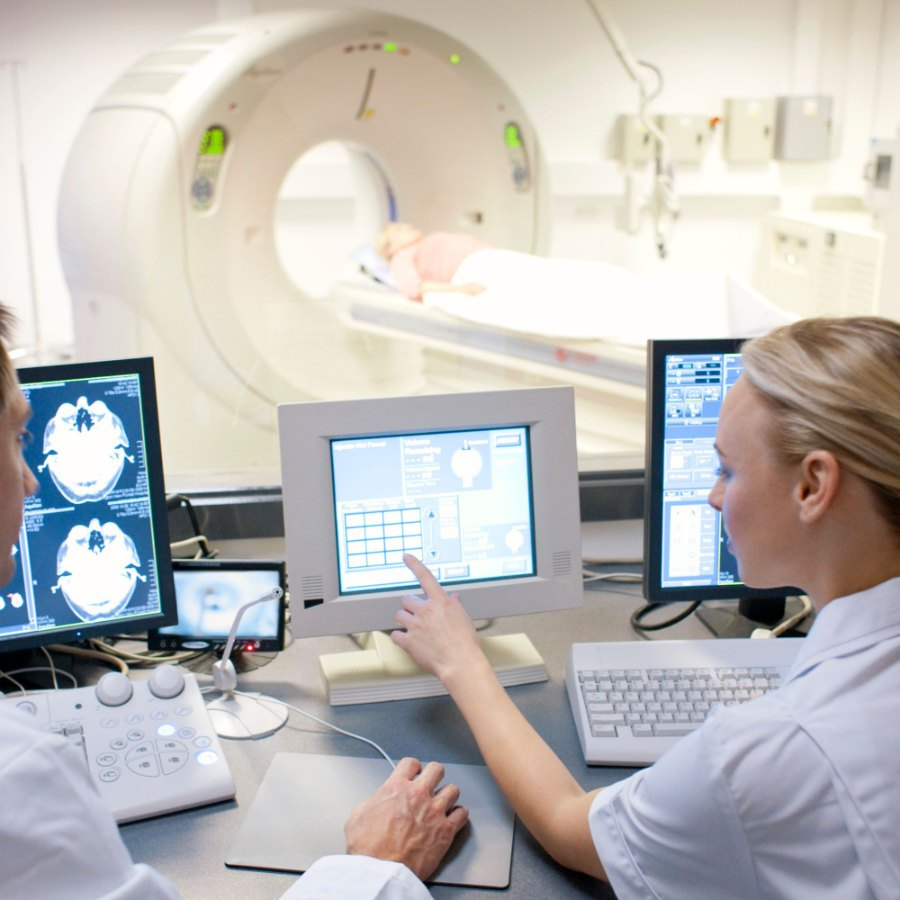
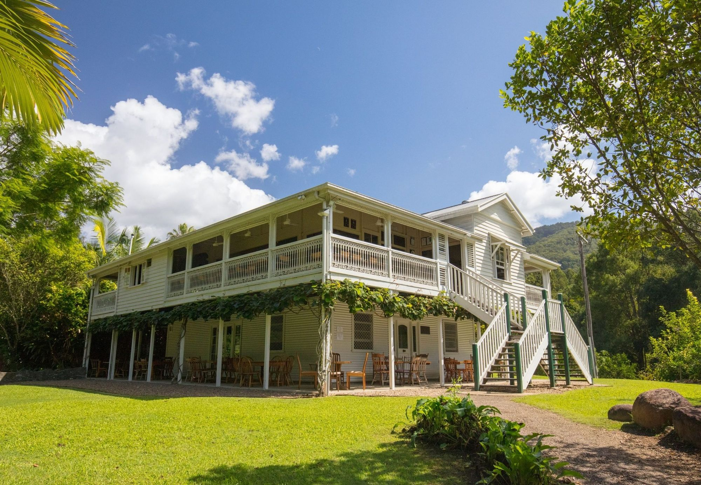

What if your next career move was bigger than a new job?
For radiographers, sonographers, radiation therapists and nuclear medicine technologists trained outside Australia. Whether the move could work for your registration, your money and the people coming with you, before anyone talks to you about a vacancy.
Probably, if three things are true
You hold a recognised qualification in one of these four professions and have practised since. You are thinking about Australia somewhere between six months and two years from now, rather than needing to leave next month. And you would rather know what the move involves than be told it is simple.
Wherever you trained — the United Kingdom, Ireland, South Africa, the Gulf, India or the Philippines — the route depends on your qualification and your regulator rather than your passport. Radiologists are doctors with a different regulator and a different page: consultant radiologists in Australia.
Six questions, in the order they decide things
A move like this turns on a handful of questions, and they have an order. Each has a short answer here and a tool behind it.
Can I work there?
Which body registers you, which route applies, and the standing, English, character and health checks that set the timeline.
What could I earn?
Public pay is set state by state, private practice sits outside it, and superannuation is paid on top. What that means for you, not a headline figure.
Can we afford it?
Registration, the visa, flights, shipping, a rental bond and the first weeks with no income. What the whole move costs, and what an employer usually covers.
Destination finder
A continent, not a city. Regional Western Australia and Melbourne’s outer suburbs are different decisions, and the roles are often where you were not looking.
What jobs could I get?
The Australian imaging roles we are recruiting now, by modality and place, and which of them are open to someone whose registration is still in progress.
How do we plan it all?
Registration, the job, the visa, the money, the move and the first month, in the order they happen — with a note of what you have already done.
Four professions, two regulators
Australia runs a large public system alongside one of the biggest private imaging markets in the world, and it does not train enough people to staff either. Internationally qualified clinicians are a permanent part of how imaging works here, not a gap-filler.
The thing to settle first: three of these professions register with Ahpra, and one does not register at all — sonography is accredited instead. Start on the wrong route and you lose months you cannot get back.
- RadiographersPlain film, CT, MRI, mammography, theatre and interventional work across public and private services. Registered with the Medical Radiation Practice Board through Ahpra.
- SonographersGeneral, obstetric and cardiac scanning, with a private market that pays for it. Accredited through ASMIRT and ASAR — not an Ahpra-registered profession.
- Radiation therapistsPlanning and delivering treatment across public cancer centres and a growing private network. Same board, same Ahpra application as radiography.
- Nuclear medicine technologistsSPECT/CT and PET/CT practice, with theranostics expanding fast. Ahpra registration plus an ANZSNM skills assessment.
Mammography, CT and MRI are not separate professions
They are scopes within radiography, and one Ahpra registration covers all of them. Australian employers advertise by modality, so we name them above because that is how people search — but the route in is the radiographer route.
Registration comes before recruitment
No employer here can shorten this, and neither can we. What we can do is tell you which route you are on before you spend money, and be straight when there is a real obstacle.
Ahpra, through the Medical Radiation Practice Board
One national board, one application, three divisions of practice. Your qualification is assessed against the Australian standard; where it falls short you may be asked for supervised practice or further assessment rather than refused outright. Nuclear medicine adds an ANZSNM skills assessment, and radiation licensing is handled state by state on top.
ASAR, after ASMIRT recognises your qualification
Sonography is not a registered profession in Australia. You are accredited instead: ASMIRT assesses your qualification, then you enter the ASAR register. Different body, different evidence, different timeline — and a route that trips up people who assume Ahpra covers everything in an imaging department.
And it is more than your qualification
Certificates of good standing from every regulator you have held, an English-language test unless you qualify for an exemption, a criminal history check, a health and fitness-to-practise declaration, and recency of practice. These are what usually set the timeline, and they are the same whichever of the four professions you hold. Every gate, in one place →
What could your week look like?
Australia is not one imaging labour market. The funder shapes the job as much as the employer does, the modality shapes the day, and the state you land in shapes the agreement and the rota.
When a vacancy names a title, the useful questions are which rooms, which case mix, who funds it and what the after-hours commitment is.
General diagnostic imaging
The widest door, and where most people start. In a public department that means plain film, fluoroscopy and cross-sectional work in the same week, with the emergency department and theatre lists pulling on the same rooms — run by state and territory health services, so your enterprise agreement, rota and progression are set where you land rather than federally. Private and community imaging is the other half of the picture and a very large employer: referred outpatient work on Medicare-funded requests, booked lists, a great deal of musculoskeletal imaging, and often the newest equipment.
CT & MRI
Depth in one place rather than breadth across many, and the modalities employers ask about most. Cross-sectional experience gained overseas usually transfers well; smaller sites may expect you to cover both.
Mammography & breast screening
National population screening is a defined, high-volume workflow with its own quality requirements and its own mobile services. It carries its own training expectations, so check what will be recognised before you plan around it.
Sonography
General, obstetric, vascular and cardiac scanning, much of it in private practice, with a degree of autonomy in reporting that many overseas sonographers have not had. One of the most sought-after corners of the family, and the one with the most distinctive route in.
Nuclear medicine & PET
SPECT/CT, PET/CT and theranostics, concentrated in fewer centres. Radiation licensing is handled state by state on top of national registration — an extra step rather than a barrier, but one that takes time.
Radiation therapy
Its own profession and its own route, not a corner of diagnostic imaging. Treatment is delivered from designated centres rather than every hospital, so the job comes with a location decision attached, and the work is planned, longitudinal and spent with the same patients over weeks.
Regional & remote
This cuts across all of the above. Broader practice, more autonomy and a closer-knit team — you are more likely to be the person on site than one of several, and often better paid, with regional allowances on top. The trade-off can be distance, fly-in services, on-call and fewer specialist services nearby, which are worth understanding before choosing where to live. Regional does not mean second best. It does mean a different life, and we would rather you chose it knowing that.

Public hospital services
Acute and unselected case mix, the widest range of equipment, an on-call commitment, and pay set by the enterprise agreement of the state you work in.
Private & Medicare-funded practice
Booked lists, referred outpatients, commercial throughput and often better equipment for a narrower range of work. Public or private is not the same job with a different employer — it changes your case mix, your hours, your autonomy and what a week feels like.
A bigger salary does not automatically mean a better move
Two questions people usually ask as one. The first is about the scale you would be paid on. The second is about what the move costs before that salary arrives, and what is left of it once rent, school and the exchange rate have had their say.
Pay is set state by state
Public-sector pay runs on state and territory enterprise agreements, so the same job pays differently in Perth and in Hobart. Private practice sits outside those agreements again. Superannuation is paid on top of base salary, and it is a real part of the package rather than a footnote. Seniority, hours, on-call and allowances move the total more than the headline does.
The move has a price before the first payslip
Assessment and registration fees, an English test, police checks, the visa for everyone coming, flights, shipping, temporary accommodation and a rental bond. Employers often contribute to some of it, and rarely to all of it. The calculator puts a range on the whole thing for a single clinician or a household.
Also worth knowing
Which visa would I need?
Most clinicians arrive on either an employer-sponsored visa or a skilled visa. Which is better depends less on your profession than on your age, your family and whether you want permanent residence from the start. Imaging professions have featured on the skilled occupation lists, but the lists change — check the current one rather than planning around what was true last year.
The visa can usually run alongside registration rather than after it. Visas and residence
Does the state or territory matter?
For registration and accreditation, no — both are national and travel with you. For pay, rostering, radiation licensing and how quickly you get onto a modality, yes. The difference between states is larger than most people expect.
Can my partner work?
On most of the visas clinicians use, yes — a partner on the same visa usually has work rights. Whether there is work for them where the role is, and whether their own qualification is recognised, are the questions to ask before you shortlist a town. We ask them in the first conversation.
What about the rest of the move?
Schools, housing, healthcare, banking, shipping, pets and the first few weeks are the same whichever profession you hold, so we explain them once rather than on each page.
The roles are often where you were not looking
Most people picture Sydney or Melbourne. Most of the imaging roles we are asked to fill are in regional Western Australia, regional Queensland, Tasmania and the outer suburbs of the big cities — places with a real shortage, better-paid versions of the job, and a life that suits some households far better than a capital would.
Some locations are much more sought after than others. That does not make them better. The destination guides are written for the whole household — commute, schools, partner work, climate, distance from an airport — and they are candid about the disadvantages.

Regional QueenslandBundaberg and the coast north of Brisbane TasmaniaHobart and Launceston, and a different climate entirely MelbourneThe outer suburbs, where the city’s public imaging is expandingSometimes we will tell you not yet
Before we talk about jobs we look at what you hold, where you trained and the kind of practice and place you want. If there is a realistic route we set it out, with the steps and the likely timeline. If there is a real obstacle — recency, an assessment that will take a year, a partner whose qualification will not transfer — we say so, rather than let you pay an assessment fee to find out.
We do not grant registration and we do not guarantee it; the regulator does that. What we do is keep the file moving, put the steps in the right order, and stay with you after the offer — because most moves that fail, fail at the relocation rather than the interview.

Current opportunities in Australia
Imaging roles we are recruiting into now, by modality and place. Each one says which registration it expects and what the employer usually covers.
Nothing live in imaging at the moment
Australian imaging roles come to us in runs rather than a steady trickle. Tell us your modality, where you would consider and roughly when, and we will come back to you when the right one opens — no CV needed yet.
Tell us you are thinking about Australia. That is enough for now.
Your profession, where you are now, and roughly when. No CV, no commitment. We will tell you what your route looks like and let you know when the right role opens — and if the answer is not yet, we will say that too.